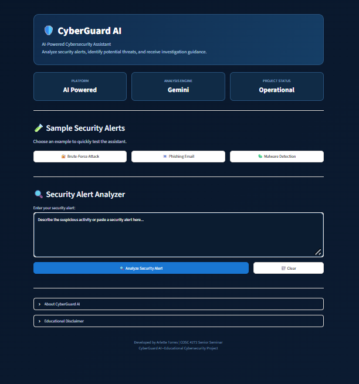

CyberGuard AI
An AI-powered cybersecurity assistant developed to analyze security alerts, identify potential threats, assess severity, and recommend investigation steps. Integrates Google's Gemini API to provide beginner-friendly security analysis.
Technologies: Python, Streamlit, Google Gemini API, HTML, CSS
View Project